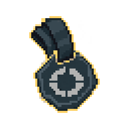

#04 · tome_04Связь с оригиналомMegabonkEvasion TomeПечатиVeil SealПечать завесыЭффект оригинального тома · базовое улучшение Common+10% к уклонениюИсточник MegabonkПечати · карточкаJSONPNG64 px32 px